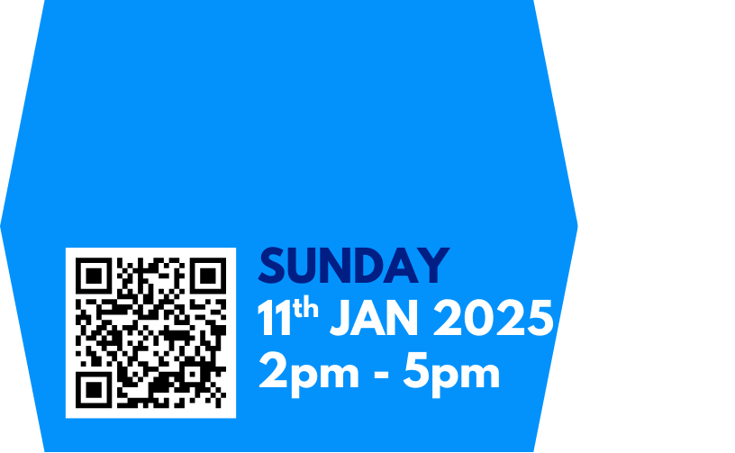
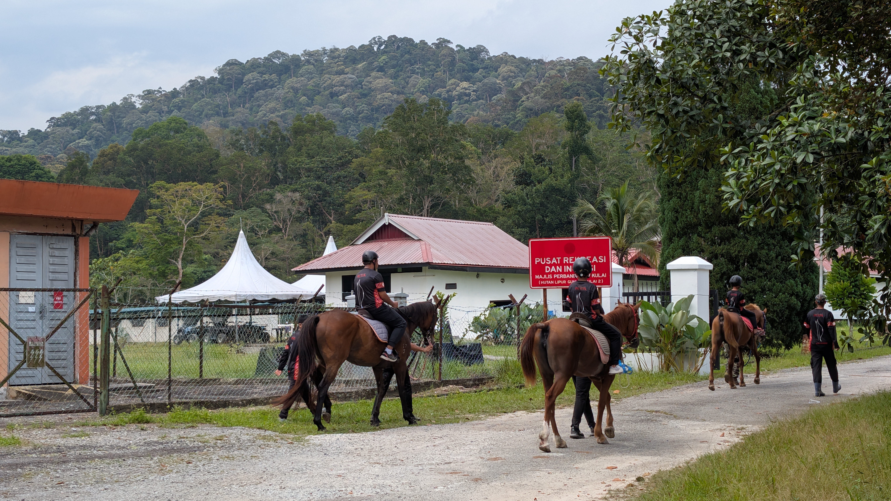
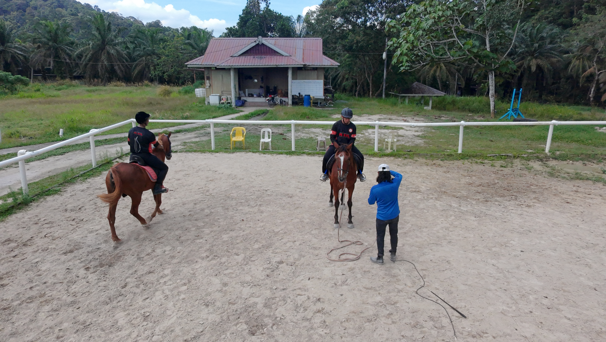
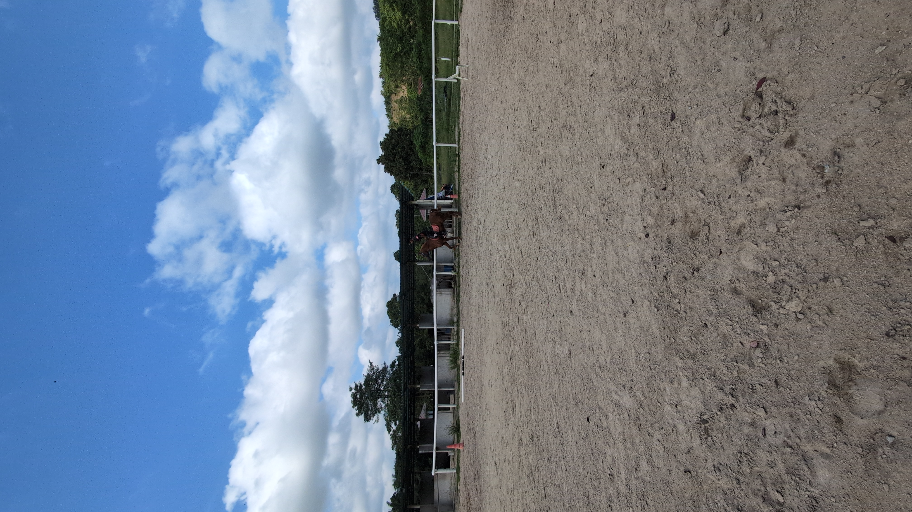

TAQWA
A HAA(S) development programme represented throughout the Association's programme and media archive.
 HAA(S)
HAA(S)

HORSE ARCHERY • TRADITIONAL ARCHERY • SINGAPORE
Developing horseback archery and traditional archery as cultural heritage, athletic discipline and a community for growth.
SOCIETY OF HORSE ARCHERY ASSOCIATION (SINGAPORE)
HAA(S) promotes, develops and preserves Horseback Archery and Traditional Archery in Singapore, creating structured opportunities for training, recreation and competition in a safe and supportive environment.
We foster skill, confidence, discipline and sportsmanship while building partnerships with communities and organisations that share our commitment to equestrian culture and traditional martial arts.

THE DISCIPLINE
Horseback archery brings equestrian skill and traditional archery together in a demanding discipline built on balance, timing, trust and control.
PROGRAMMES & DEVELOPMENT

A HAA(S) development programme represented throughout the Association's programme and media archive.

Structured opportunities for members to develop archery, horsemanship and competition skills.
Community activities and training experiences that build confidence, camaraderie and practical riding experience.
MEMBERSHIP
For individuals who want full participation in the Society, subject to eligibility and good standing.
For individuals who support or participate in the Society without the voting rights reserved to Voting Members.
For compatible clubs, academies, riding establishments, societies and sporting organisations.
GOVERNANCE
HAA(S) is governed by its Constitution and Management Committee, with General Meetings providing the Society's principal forum for member governance.
Our governance framework covers membership, Associate Clubs, elections, meetings, financial administration, audit and constitutional amendments.
Request governance information →
OUR SYMBOL
The five stars use the colours of the standard World Archery target face. The horseshoe represents strength, loyalty and resilience; the Lionhead reflects national pride and athletic excellence; and the two bows represent unity, camaraderie, restraint, safety and trust.
CONTACT HAA(S)
For membership, Associate Club, programme, partnership or governance enquiries, contact the Association.